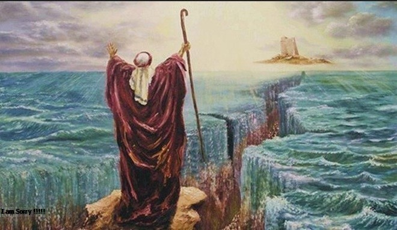

Kemenangan Nabi Musa dan Kebinasaan Firaun di Hari Asyura
Ketika penduduk Mesir semakin fanatik dengan kekufuran mereka. Permusuhan dan pengingkaran mereka terhadap Rasulullah Musa ﷺ kian mengobarkan hasrat untuk membunuh dan menindas utusan Allah dan orang-orang yang mengikutinya. Mereka mengikuti raja mereka yang zhalim, Firaun. Saat itulah Allah tegakkan hujjah-Nya membinasakan mereka semua. Mereka telah menyaksikan tanda-tanda dan kejadian-kejadian yang di luar nalar. Kejadian yang keluar dari proses alamiahnya. Dan membuat akal terheran-heran. Tapi mereka tetap tak mau berhenti, tak mau memahami, dan tak mau kembali kepada Allah ﷻ.
DDengan kekuasaan dan kesewenang-wenangannya, Firaun berhasil menekan rakyatnya untuk mengingkari kebenaran yang dibawa Nabi Musa.
فَمَا آمَنَ لِمُوسَى إِلاَّ ذُرِّيَّةٌ مِّن قَوْمِهِ عَلَى خَوْفٍ مِّن فِرْعَوْنَ وَمَلَئِهِمْ أَن يَفْتِنَهُمْ وَإِنَّ فِرْعَوْنَ لَعَالٍ فِي الأَرْضِ وَإِنَّهُ لَمِنَ الْمُسْرِفِينَ
“Maka tidak ada yang beriman kepada Musa, melainkan pemuda-pemuda dari kaumnya (Musa) dalam keadaan takut bahwa Firaun dan pemuka-pemuka kaumnya akan menyiksa mereka. Sesungguhnya Firaun itu berbuat sewenang-wenang di muka bumi. Dan sesungguhnya dia termasuk orang-orang yang melampaui batas.” (QS:Yunus | Ayat: 83).
Pada saat Rasul ingin mendapatkan wahyu pertamanya, Rasul mendapatkan sebuah mimpi Malaikat Jibril menghampirinya. Rasul pun menyendiri di Gua Hira tepatnya di sebelah atas Jabal Nur. Disitulah Rasul diperlihatkan bahwa mimpinya adalah benar.
Malaikat Jibril pun datang kepada Rasul dan turunlah wahyu yang pertama yang ia bawakan dari Allah SWT,
اقْرَأْ بِاسْمِ رَبِّكَ الَّذِي خَلَقَ◌ اقْرَأْ وَرَبُّكَ الْأَكْرَمُ◌ الَّذِي عَلَّمَ بِالْقَلَمِ◌ عَلَّمَ الْإِنْسَانَ مَا لَمْ يَعْلَمْ◌
Artinya : “Bacalah dengan (menyebut) nama Tuhanmu yang menciptakan, Dia telah menciptakan manusia dari segumpal darah. Bacalah, dan Tuhanmulah Yang Maha Pemurah, Yang mengajar (manusia) dengan perantaraan kalam. Dia mengajarkan kepada manusia apa yang tidak diketahuinya.” (QS. Al-‘Alaq, 1-4)
Puncaknya, Firaun mengklaim dirinya sebagai Tuhan yang berhak disembah. Ketika kezhaliman telah memuncak, saat itulah pertolongan Allah datang. Nabi Musa mengumpulkan para pengikutnya. Menasihati mereka, meneguhkan hati mereka, dan memberikan arahan kepada mereka.
وَقَالَ مُوسَى يَا قَوْمِ إِن كُنتُمْ آمَنتُم بِاللّهِ فَعَلَيْهِ تَوَكَّلُواْ إِن كُنتُم مُّسْلِمِينَ
Berkata Musa: “Hai kaumku, jika kamu beriman kepada Allah, maka bertawakkallah kepada-Nya saja, jika kamu benar-benar orang yang berserah diri”. (QS:Yunus | Ayat: 84).
Nabi Musa memerintahkan mereka agar bertawakal kepada Allah semata. Meminta tolong dan berharap kepada-Nya. Dan Allah ﷻ pun memberikan jalan keluar untuk mereka semua. Kemudian Nabi Musa memberikan kabar gembira dari Allah kepada kaumnya,
وَأَوْحَيْنَا إِلَى مُوسَى وَأَخِيهِ أَن تَبَوَّءَا لِقَوْمِكُمَا بِمِصْرَ بُيُوتًا وَاجْعَلُواْ بُيُوتَكُمْ قِبْلَةً وَأَقِيمُواْ الصَّلاَةَ وَبَشِّرِ الْمُؤْمِنِينَ
Dan Kami wahyukan kepada Musa dan saudaranya: “Ambillah olehmu berdua beberapa buah rumah di Mesir untuk tempat tinggal bagi kaummu dan jadikanlah olehmu rumah-rumahmu itu tempat shalat dan dirikanlah olehmu sembahyang serta gembirakanlah orang-orang yang beriman”.(QS:Yunus | Ayat: 87).
Allah ﷻ mewahyukan kepada Nabi Musa dan saudaranya, Harun –‘alaihimassalam- agar ia dan kaumnya membangun rumah yang berbeda dari rumah orang-orang Mesir secara umum. Alasannya, ketika perintah untuk pergi dari Mesir datang, mereka lebih mudah untuk memberi tahu satu dengan yang lainnya. Perhatikanlah! Selain pertolongan Allah berupa mukjizat, Nabi Musa juga menempuh usaha-usaha nyata seperti ini.
Kemudian datanglah perintah Allah ﷻ,
وَاجْعَلُواْ بُيُوتَكُمْ قِبْلَةً وَأَقِيمُواْ الصَّلاَةَ وَبَشِّرِ الْمُؤْمِنِينَ
“dan jadikanlah olehmu rumah-rumahmu itu tempat shalat dan dirikanlah olehmu sembahyang serta gembirakanlah orang-orang yang beriman.” (QS:Yunus | Ayat: 87).
Mujahid mengatakan, “Maknanya adalah ini merupakan pertolongan Allah kepada mereka yang ditimpa bahaya, kesulitan, dan kesempitan dengan banyak shalat.
وَاسْتَعِينُواْ بِالصَّبْرِ وَالصَّلاَةِ وَإِنَّهَا لَكَبِيرَةٌ إِلاَّ عَلَى الْخَاشِعِينَ
“Jadikanlah sabar dan shalat sebagai penolongmu. Dan sesungguhnya yang demikian itu sungguh berat, kecuali bagi orang-orang yang khusyu´.” (QS:Al-Baqarah | Ayat: 45).
Dan Rasulullah jika dihinggapi masalah, beliau bersegera shalat. Shalat memiliki dampak besar terhadap kehidupan dunia dan akhirat (al-Bidayah wa an-Nihayah Juz: 2 Hal: 105).
Selama bertahun-tahun, Nabi Musa dan pengikutnya bersabar dan menghibur diri dengan keimanan kepada Allah dan tawakal. Mereka senantiasa memperbaiki hubungan dengan Allah. meminta tolong pada-Nya dengan shalat-shalat mereka. Di sisi lain, Firaun dan para pengikutnya semakin menentang dan memusuhi kebenaran.
Nabi Musa senantiasa berdoa kepada Allah ﷻ,
وَقَالَ مُوسَى رَبَّنَا إِنَّكَ آتَيْتَ فِرْعَوْنَ وَمَلأهُ زِينَةً وَأَمْوَالاً فِي الْحَيَاةِ الدُّنْيَا رَبَّنَا لِيُضِلُّواْ عَن سَبِيلِكَ رَبَّنَا اطْمِسْ عَلَى أَمْوَالِهِمْ وَاشْدُدْ عَلَى قُلُوبِهِمْ فَلاَ يُؤْمِنُواْ حَتَّى يَرَوُاْ الْعَذَابَ الأَلِيمَ
Musa berkata: “Ya Tuhan kami, sesungguhnya Engkau telah memberi kepada Firaun dan pemuka-pemuka kaumnya perhiasan dan harta kekayaan dalam kehidupan dunia, ya Tuhan Kami — akibatnya mereka menyesatkan (manusia) dari jalan Engkau. Ya Tuhan kami, binasakanlah harta benda mereka, dan kunci matilah hati mereka, maka mereka tidak beriman hingga mereka melihat siksaan yang pedih”. (QS:Yunus | Ayat: 88).
Ibnu Juraij mengatakan, “Firaun tetap hidup selama 40 tahun setelah Nabi Musa mengucapkan doa ini.” (Tafsir al-Quran al-Azhim oleh Imam Ibnu Kastir). Lihatlah Nabi Musa, selain bersabar terhadap kaumnya sendiri, betapa sabarnya beliau menghadapi kekejaman Firaun, berdakwah kepadanya, dan berdoa kepada Allah. Tak heran Allah ﷻ mendudukkan beliau sebagai seorang ulul azhmi.
Allah ﷻ berfirman,
فَاسْتَقِيمَا وَلاَ تَتَّبِعَانِّ سَبِيلَ الَّذِينَ لاَ يَعْلَمُونَ
“Sebab itu tetaplah kamu berdua pada jalan yang lurus dan janganlah sekali-kali kamu mengikuti jalan orang-orang yang tidak mengetahui.” (QS:Yunus | Ayat: 89).
Allah mengizinkan Nabi Musa dan para pengikutnya untuk keluar dari Mesir menuju Syam.
Mengetahui kepergian Musa, kemarahan Firaun semakin memuncak. Ia siapkan pasukannya untuk mengerjar Nabi Musa dan pengikutnya. Kejadian ini diabadikan Allah ﷻ dalam Alquran.
وَأَوْحَيْنَا إِلَى مُوسَى أَنْ أَسْرِ بِعِبَادِي إِنَّكُم مُّتَّبَعُونَ * فَأَرْسَلَ فِرْعَوْنُ فِي الْمَدَائِنِ حَاشِرِينَ * إِنَّ هَؤُلاَء لَشِرْذِمَةٌ قَلِيلُونَ * وَإِنَّهُمْ لَنَا لَغَائِظُونَ * وَإِنَّا لَجَمِيعٌ حَاذِرُونَ * فَأَخْرَجْنَاهُم مِّن جَنَّاتٍ وَعُيُونٍ * وَكُنُوزٍ وَمَقَامٍ كَرِيمٍ * كَذَلِكَ وَأَوْرَثْنَاهَا بَنِي إِسْرَائِيلَ * فَأَتْبَعُوهُم مُّشْرِقِينَ
“Dan Kami wahyukan (perintahkan) kepada Musa: “Pergilah di malam hari dengan membawa hamba-hamba-Ku (Bani Israil), karena sesungguhnya kamu sekalian akan disusuli”. Kemudian Firaun mengirimkan orang yang mengumpulkan (tentaranya) ke kota-kota. (Firaun berkata): “Sesungguhnya mereka (Bani Israil) benar-benar golongan kecil, dan sesungguhnya mereka membuat hal-hal yang menimbulkan amarah kita, dan sesungguhnya kita benar-benar golongan yang selalu berjaga-jaga”. Maka Kami keluarkan Firaun dan kaumnya dari taman-taman dan mata air, dan (dari) perbendaharaan dan kedudukan yang mulia, demikianlah halnya dan Kami anugerahkan semuanya (itu) kepada Bani Israil. Maka Firaun dan bala tentaranya dapat menyusuli mereka di waktu matahari terbit.” (QS:Asy-Syu’araa | Ayat: 52-60).
Pada saat Firaun dan pasukannya berhasil menyusul Nabi Musa dan pengikutnya, pengikut Nabi Musa berkata,
إِنَّا لَمُدْرَكُونَ
“Sesungguhnya kita benar-benar akan tersusul.” (QS:Asy-Syu’araa | Ayat: 61).
Mereka mengatakan demikian karena melihat di hadapan mereka jalan tertutup oleh lautan. Mereka mengadu kepada Nabi Musa. Kemudian beliau menjawab,
قَالَ كَلاَّ إِنَّ مَعِيَ رَبِّي سَيَهْدِينِ
Musa menjawab: “Sekali-kali tidak akan tersusul; sesungguhnya Tuhanku besertaku, kelak Dia akan memberi petunjuk kepadaku”. (QS:Asy-Syu’araa | Ayat: 62).
Nabi Musa mengucapkan kalimat kuat dengan makna yang jelas. Menunjukkan kedalaman ilmu dan keyakinan terhadap rahmat Allah. Perkataan seorang leader yang membuat tenang rakyatnya di saat menghadapi himpitan masalah. Keadaan saat itu benar-benar genting. Tidak ada jalan yang bisa dilewati. Tidak ada orang yang bisa dimintai tolong. Dan Firaun adalah kejam yang tak mungkin memberi maaf. Sementara waktu terus membuat jarak Firaun kian mendekat. Dalam keadaan demikian, Nabi Musa tetap tenang dan yakin Allah akan menolongnya. Sikap ini hendaknya kita teladani sebagai seorang muslim yang beriman kepada Allah ﷻ. Turunlah wahyu kepada Nabi Musa,
فَأَوْحَيْنَا إِلَى مُوسَى أَنِ اضْرِب بِّعَصَاكَ الْبَحْرَ فَانفَلَقَ فَكَانَ كُلُّ فِرْقٍ كَالطَّوْدِ الْعَظِيمِ
Lalu Kami wahyukan kepada Musa: “Pukullah lautan itu dengan tongkatmu”. Maka terbelahlah lautan itu dan tiap-tiap belahan adalah seperti gunung yang besar. (QS:Asy-Syu’araa | Ayat: 63).
Melihat laut terbelah, Nabi Musa dan pengikutnya bersegera melintasi jalan terbelah itu. Setelah melintasinya, dan pengikutnya yang paling akhir melintas telah keluar dari laut, barulah barisan awal pasukan Firaun memasuki laut. Musa ingin segera memukul laut itu agari ai kembali ke keadaannya semula. Sehingga Firaun dan pasukannya tidak bisa lewat. Namun Allah ﷻ memerintahkan,
وَاتْرُكْ الْبَحْرَ رَهْوًا إِنَّهُمْ جُندٌ مُّغْرَقُونَ
“Dan biarkanlah laut itu tetap terbelah. Sesungguhnya mereka adalah tentara yang akan ditenggelamkan.” (QS:Ad-Dukhaan | Ayat: 24).
Melihat tanda kebesaran Allah dan mukjizat Musa dengan terbelahnya laut, Firaun sadar itu adalah kekuasaan Allah ﷻ. Bukan sihirnya Musa. Akan tetapi ia membawa mati sifat sombongnya, dalam keadaan demikian ia tetap mengatakan, “Lihatlah! Bagaimana laut menjadi surut, tunduk kepadaku. Aku akan menangkap dua orang hambaku (Musa dan Harun) yang telah memberontak kepadaku”.
Firaun dan pasukannya bergegas masuk, melintasi belahan laut yang akan membinasakan mereka. saat mereka semua telah masuk ke dalam laut, Allah ﷻ memerintahkan Musa untuk memukul laut dengan tongkatnya. Musa pun melakukan perintah Rabbnya. Laut yang terbelah itu kembali seperti semula. Allah ﷻ berfirman,
وَأَنجَيْنَا مُوسَى وَمَن مَّعَهُ أَجْمَعِينَ * ثُمَّ أَغْرَقْنَا الآخَرِينَ * إِنَّ فِي ذَلِكَ لَآيَةً وَمَا كَانَ أَكْثَرُهُم مُّؤْمِنِينَ
“Dan Kami selamatkan Musa dan orang-orang yang besertanya semuanya. Dan Kami tenggelamkan golongan yang lain itu. Sesungguhnya pada yang demikian itu benar-benar merupakan suatu tanda yang besar (mukjizat) dan tetapi adalah kebanyakan mereka tidak beriman.” (QS:Asy-Syu’araa | Ayat: 65-67).
Tidak ada seorang pun dari kalangan orang-orang beriman tenggelam. Dan tidak satu pun dari Firaun dan pengikutnya yang bisa selamat.
Setelah benar-benar sadar dan yakin akan tenggelam Firaun mengatakan:
وَجَاوَزْنَا بِبَنِي إِسْرَائِيلَ الْبَحْرَ فَأَتْبَعَهُمْ فِرْعَوْنُ وَجُنُودُهُ بَغْيًا وَعَدْوًا حَتَّى إِذَا أَدْرَكَهُ الْغَرَقُ قَالَ آمَنتُ أَنَّهُ لا إِلِهَ إِلاَّ الَّذِي آمَنَتْ بِهِ بَنُو إِسْرَائِيلَ وَأَنَاْ مِنَ الْمُسْلِمِينَ
“Dan Kami memungkinkan Bani Israil melintasi laut, lalu mereka diikuti oleh Firaun dan bala tentaranya, karena hendak menganiaya dan menindas (mereka); hingga bila Firaun itu telah hampir tenggelam berkatalah dia: “Saya percaya bahwa tidak ada Tuhan melainkan Tuhan yang dipercayai oleh Bani Israil, dan saya termasuk orang-orang yang berserah diri (kepada Allah)”.” (QS:Yunus | Ayat: 90).
Allah mencelanya dan memberi pelajaran kepada kita semua. Apakah ketika nyawa di kerongkongan dan kebinasaan sudah benar-benar tampak, baru seseorang akan sadar?
آلْآنَ وَقَدْ عَصَيْتَ قَبْلُ وَكُنْتَ مِنَ الْمُفْسِدِينَ
“Apakah sekarang (baru kamu percaya), padahal sesungguhnya kamu telah durhaka sejak dahulu, dan kamu termasuk orang-orang yang berbuat kerusakan.” (QS:Yunus | Ayat: 91).
Allah telah menetapkan hukumnya. Dan membinasakan orang-orang yang berbuat zhalim.
فَالْيَوْمَ نُنَجِّيكَ بِبَدَنِكَ لِتَكُونَ لِمَنْ خَلْفَكَ آيَةً ۚ وَإِنَّ كَثِيرًا مِنَ النَّاسِ عَنْ آيَاتِنَا لَغَافِلُونَ
“Maka pada hari ini Kami selamatkan badanmu supaya kamu dapat menjadi pelajaran bagi orang-orang yang datang sesudahmu dan sesungguhnya kebanyakan dari manusia lengah dari tanda-tanda kekuasaan Kami.” (QS:Yunus | Ayat: 92).
Berlalulah kejadian itu. Namun pelajarannya tidak pernah hilang sepanjang zaman.
Dari Ibnu Abbas radhiallahu ‘anhuma, Rasulullah ﷺ datang ke Madinah. Beliau dapati orang-orang Yahudi berpuasa pada hari Asyura (10 Muharam). Kemudian beliau ﷺ bertanya pada mereka,
« مَا هَذَا الْيَوْمُ الَّذِى تَصُومُونَهُ ». فَقَالُوا هَذَا يَوْمٌ عَظِيمٌ أَنْجَى اللَّهُ فِيهِ مُوسَى وَقَوْمَهُ وَغَرَّقَ فِرْعَوْنَ وَقَوْمَهُ فَصَامَهُ مُوسَى شُكْرًا فَنَحْنُ نَصُومُهُ. فَقَالَ رَسُولُ اللَّهِ -صلى الله عليه وسلم- « فَنَحْنُ أَحَقُّ وَأَوْلَى بِمُوسَى مِنْكُمْ ». فَصَامَهُ رَسُولُ اللَّهِ -صلى الله عليه وسلم- وَأَمَرَ بِصِيَامِهِ.
“Hari yang kalian bepuasa ini adalah hari apa?” Orang-orang Yahudi itu menjawab, “Ini adalah hari yang sangat mulia. Ini adalah hari di mana Allah menyelamatkan Musa dan kaumnya. Ketika itu pula Firaun dan kaumnya ditenggelamkan. Musa berpuasa pada hari ini dalam rangka bersyukur, maka kami pun mengikuti beliau berpuasa pada hari ini”.
Rasulullah ﷺ lantas berkata, ”Kita seharusnya lebih berhak dan lebih utama mengikuti Musa daripada kalian.”. Lalu setelah itu Rasulullah ﷺ memerintahkan kaum muslimin untuk berpuasa.” (HR. Muslim no. 1130).